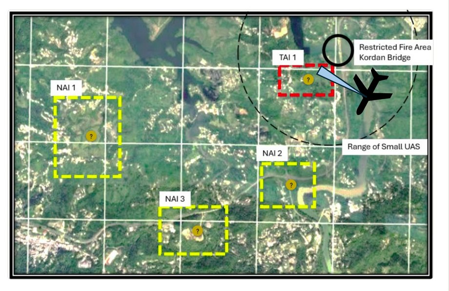
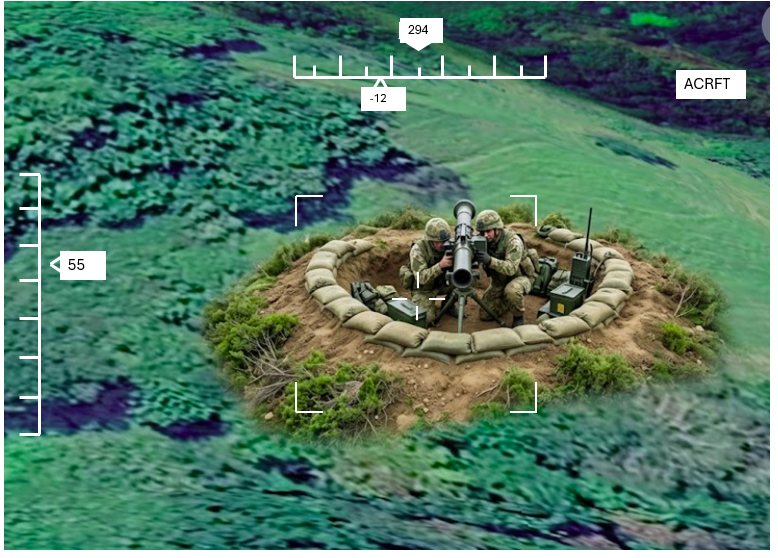
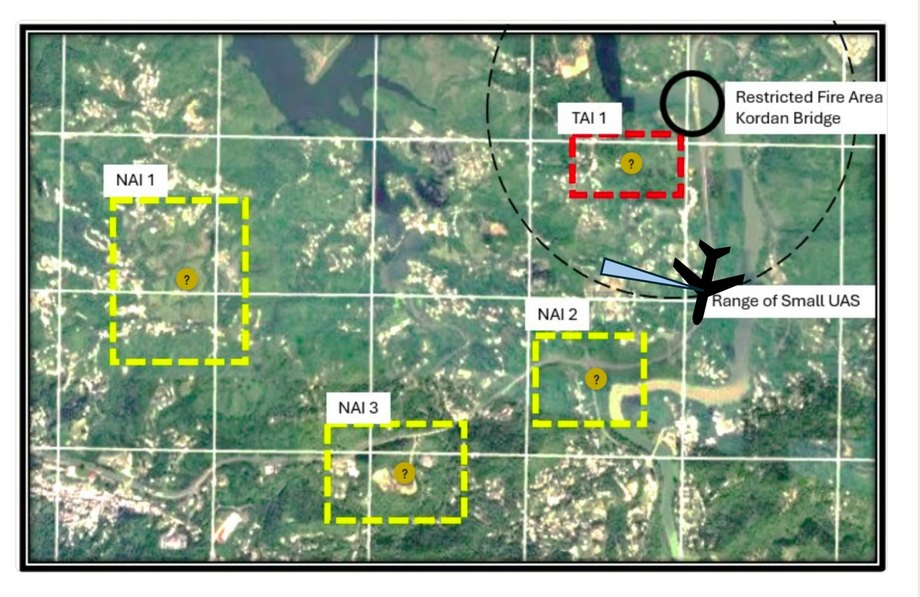
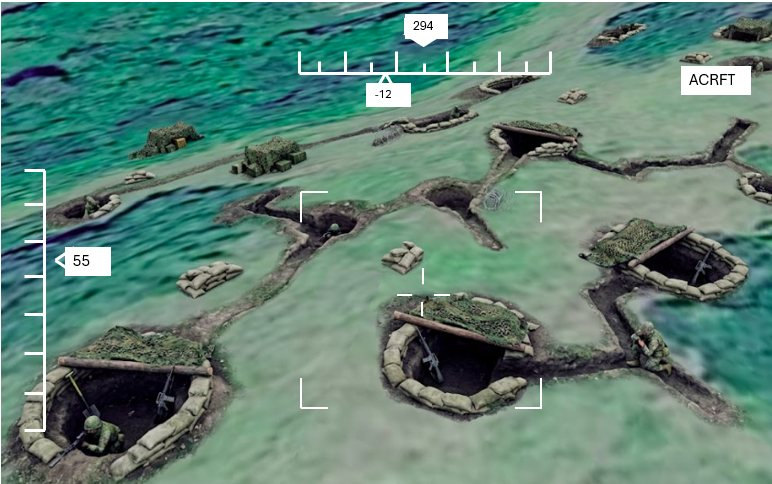

Detect: Find, Fix, Track
The six steps one target passes through once the operation is running.
In the “decide” phase we determine what targets are highest priority to engage. In the “detect” phase we are responsible for finding the targets we have decided are most important. In the “deliver” phase we engage those targets. Frequently, the Detect and Deliver phases happen concurrently, as we continue to detect targets while simultaneously delivering upon others. Only in the beginning of conflict may we have the opportunity to detect all targets before delivery upon those targets has begun.
All target types are engaged using the mnemonic F2T2EA, used to understand the status of a given target within current operations.
| Term | Doctrinal definition |
|---|---|
| FindDetect | An emerging target is detected within an area of interest. Location is approximate and identity is unknown. |
| FixDetect | Target identity is positively confirmed (PID) and location accuracy is refined (low TLE) to enable weapon engagement. |
| TrackDetect | Continuous sensor custody is maintained on the fixed target over time to monitor movement and preserve targetable data until strike execution. |
| TargetDeliver | Engagement authority is requested/granted, the target is validated against ROE and Collateral Damage Estimation (CDE), and a weapon system is paired. |
| EngageDeliver | The strike order is issued and the selected weapon system executes the attack (dispatch, launch, or terminal prosecution). |
| AssessAssess | Combat Assessment and Battle Damage Assessment (BDA) are conducted to evaluate strike effectiveness and determine if a re-attack is required. |
Task 2.2 — Example Cycle (Not Operation RIVER GATE)
NOT DONEOne enemy tank, from the first sighting to the last report. For each situation, name the F2T2EA step it belongs to. The next situation appears once you have the current one right.
-
Ground scout reports a potential enemy vehicle disappearing into the tree line at a distance.
We know something is out there. We do not know what it is, and the location is not good enough to shoot.
-
Small UAS gets close enough to positively identify the vehicle as an enemy tank and generates targetable coordinates. Its battery then dies before any decision on how to engage is made.
We have a precise location, but nothing is watching the tank. A grid without continuous observation is Fix, not Track.
-
Forward Scout Team reports they have “eyes-on” a tank near last known position.
Eyes-on is continuous custody. We were already fixed; holding it over time is Track.
-
The FSCC gains approval to strike the tank and begins discussing options.
Authority to strike is granted and the weapon is being chosen. Nothing has been ordered to fire yet.
-
Order sent to anti-tank one-way-attack UAS unit to engage the tank under observation by the scout team.
The fire order has been sent to the unit that will execute it. Engage begins when the order goes out, not when the munition arrives.
-
Scout team observes attack drone strike near the tank. From the explosion they observe the tank quickly driving away, presumably intact.
We are judging the effect of a strike that has already happened. The tank drove away, so the assessment is that it survived and the cycle is not finished.
-
Long range ISR is tasked with and re-acquires a slightly damaged tank.
Finding it again is not the whole of it. The ISR is tasked to hold the tank, and holding custody over time is Track.
-
Headquarters element requests permission to re-task an attack helicopter.
The first strike failed, so the tank comes back to be paired with a second weapon. Assess returns a surviving target to Target, not out of the cycle.
-
Commander approves the re-tasking. Mission is sent to the pilots flying.
Authority is granted and the mission is with the aircrew. The order to strike has been issued.
-
Pilots record video of the tank being destroyed by a Hellfire missile.
The strike is complete and we are recording what it achieved. This time the assessment ends the cycle: no re-attack is required.
The steps overlap
Two things follow from that, and both of them are already in your plan. The first is that Track does not stop when the order to fire is given. The sensor that held custody of the target is the sensor that will tell you whether the strike worked, so it is still committed long after Engage. The second is that Assess can send a target back to Target rather than out of the cycle. A target that was struck but is still working has not left the cycle. It returns to be paired with a weapon a second time.
Searching with one aircraft
The long-range ISR UAS is the only thing we hold that can see a named area of interest, and only one of the two airframes can be airborne at a time. Every minute it spends watching one target is a minute it is not searching for another.
Task 2.3 — What do you tell the FSCC?
NOT DONETwo contacts made on the way to somewhere else. Step through the transit. At each contact, recommend what the aircraft does next, then say where that target sits in F2T2EA.




On the way to NAI 1
The long-range ISR UAS is transiting to NAI 1. Its sensor is turned onto TAI 1 as it passes.
ATGM team, TAI 1
What action do you recommend to the FSCC?
Long-range ISR, on its way to NAI 1, discovers an anti-tank guided missile (ATGM) team in TAI 1, as expected.
What step in F2T2EA are we in?
The aircraft notes the position and flies on to NAI 1.
On the way to NAI 2
The aircraft has left TAI 1 and is working south-west towards NAI 2, searching the ground ahead of it.
Infantry in fighting positions
What do we recommend the FSCC do?
On its way to NAI 2, the long-range ISR discovers infantry in fighting positions.